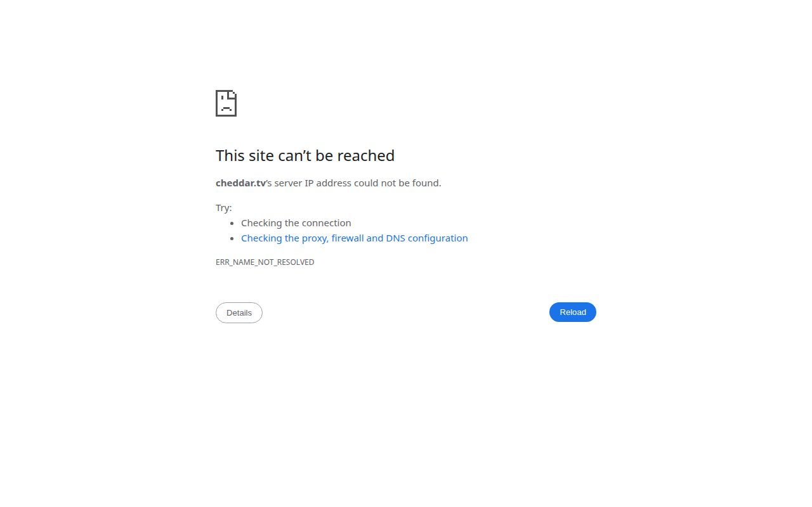

Cheddar.tv is not an earning site as far as its public pages show. The Internet Archive's last copy, from 6 June 2026, is a user-video platform ('Say cheese! Create, upload, and share your cheesiest videos') with Home, Bites, Trending and Featured sections, login and sign-up links, and Terms, Privacy and DMCA pages. We found no mention of earnings, rewards, points or payouts anywhere in it. On 2 November 2026 the domain doesn't resolve at all. If you reached an SMS verification page on this domain while looking for paid work, treat it with suspicion: a video site has no reason to pay you, and phone-number checks are a common first step in data-harvesting and fake-reward schemes.
Quick Facts
How we reviewed it
We have not been paid by Cheddar.tv and this page has no referral link. Everything below comes from the Internet Archive's saved copy of cheddar.tv from 6 June 2026 and a live check on 2 November 2026, checked on 2 November 2026. We have not signed up or withdrawn, so this review carries no score and no earnings claims. The screenshots are our own captures of the public pages.
What is Cheddar.tv?
The archived page shows a video-sharing site: a search bar, a Home / Bites / Trending / Featured menu, themed sections and a feed of videos from gaming, esports and brand channels, each with Share, Report and Save buttons. The site's own description invites visitors to "create, upload and share your cheesiest videos with friends" and "join a fun community of creators". The domain has a long history (the archive first saved cheddar.tv in 2003), so this is not the same business through its whole life.

What We Looked For
- Earning terms: none. The page text contains no points, rewards, cash, payout or "earn" wording.
- Operator: not named beyond the site name. Footer links go to Terms of Service, Privacy Policy and DMCA Policy.
- Content: trending videos from well-known gaming and brand channels, many a year or more old, and we can't tell from the page whether they were uploaded by members or pulled in from elsewhere.
- Current state: no DNS records for cheddar.tv.
The SMS Verification Prompt
If you landed on /account/smsVerification on a site like this because it was listed as a "rewards" or "get paid to watch" site, be careful. Verification texts can be used to collect phone numbers, to sign you up to premium SMS services or to build accounts for fake-reward schemes. Never enter a phone number you care about on a site that doesn't state what it pays and who runs it. For video sites that do publish an earning rate, compare our PixelPointTV network review and the watch-to-earn comparison.
Pros and Cons
Pros
- Clearly states it is a video-sharing site
- Terms, Privacy and DMCA pages exist
Cons
- No earning model or payout terms shown
- Domain no longer resolves
- Phone verification step with no stated purpose
- Feed source unclear (many third-party channel videos)
- No named operator
Tips if You Try It
- Don't give a phone number to sites that don't state their earning terms.
- Check what a site pays before verifying anything.
- If you did enter a number, watch for unexpected texts and charges and ask your carrier to block premium services.
Compare with sites that do publish a rate in our watch-to-earn comparison.
Final Verdict
Verdict: not an earning site on the evidence, and now offline
Cheddar.tv's own pages show a video site with no way to earn, and the domain no longer resolves. If someone told you it pays, we found nothing to support that. Skip the SMS verification and put your time where the terms are published.
Where to Put Your Time Instead
These are our top-rated platforms that need no deposit. Each links to our full review.
- SnazzyPTC: our top pick, a no-deposit PTC paying in BUCK on Solana.
- Prolific: paid academic studies and surveys.
- Respondent: longer, better-paid research interviews.
- Swagbucks and Freecash: offer and survey sites with low cash-out limits.
- TopCashback and Brave: earn from shopping you already do and from browsing.
- FaucetCrypto and FireFaucet: daily faucet claims to a free FaucetPay wallet.
- Honeygain: passive bandwidth sharing.
New to all this? Start with the best micro-task sites of 2026.
Sources
Checked on 2 November 2026.
Related Reviews
Was this review helpful?